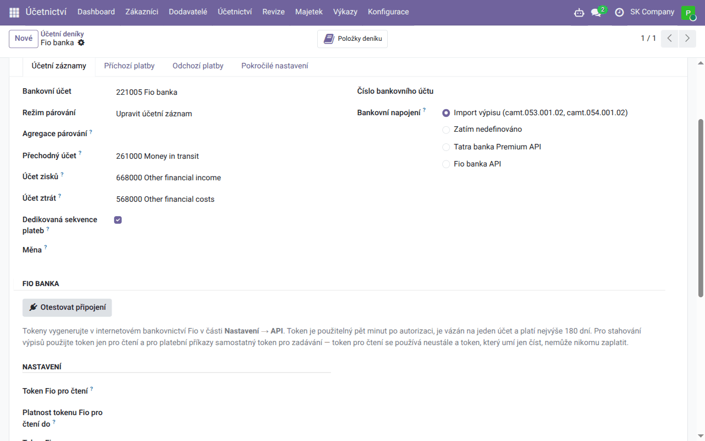

Návod k úloze
Fio banka — automatické výpisy
Pohyby z účtu u Fio banky přicházejí do Odoo samy každou hodinu, se symboly a účtem protistrany — stačí token z internetového bankovnictví na bankovním deníku.
| Země | Česko a Slovensko |
|---|---|
| Edice | Odoo Community |
| Zahrnuje | account_fio, account_statement_fio, l10n_cssk_payment_symbols, l10n_cssk_payment_symbols_oca |
K čemu tento návod slouží
S tímto nastavením se bankovní deník účtu u Fio banky plní sám: Odoo se každou hodinu zeptá Fio na nové pohyby a vytvoří z nich řádky výpisu s účtem protistrany, variabilním, konstantním a specifickým symbolem a zprávou pro příjemce. Nic není třeba stahovat z internetového bankovnictví ani importovat. Funguje pro české i slovenské účty u Fio.
Řádky se pak párují stejně jako z importovaného výpisu — automaticky podle variabilního symbolu a ručně v Párovat.
Moduly si nainstalujete sami z Aplikací. Banka se na deník napojuje vždy jen jednou cestou — pole Bankovní napojení na deníku má jedinou hodnotu, takže tentýž pohyb nepřijde dvakrát.
Token v internetovém bankovnictví
V internetovém bankovnictví Fio otevřete Nastavení → API a vytvořte token jen pro čtení k účtu, který chcete synchronizovat. Token patří jednomu účtu, platí nejvýše 180 dní a lze ho použít pět minut po autorizaci. Poznamenejte si i datum konce jeho platnosti. Pro platební příkazy z Odoo byste potřebovali samostatný token pro zadávání; pro výpisy stačí token pro čtení a ten nikomu nezaplatí.
Nastavení deníku
- Jednou nainstalujte z Aplikací modul Fio banka — bank statements (v seznamu aplikací má anglický název).
- Otevřete bankovní deník účtu u Fio (Účetnictví → Konfigurace → Účetnictví → Účetní deníky). Jeho Číslo bankovního účtu musí být účet, ke kterému token patří.
- V části Fio banka vyplňte Token Fio pro čtení a Platnost tokenu Fio pro čtení do a klikněte na Otestovat připojení. Odoo se jednou spojí s Fio, zobrazí, co banka o účtu hlásí (číslo účtu, IBAN, měnu), a zapíše to do historie deníku. Token jiného účtu nebo účtu v jiné měně, než má deník, se odmítne.
- Bankovní napojení přepněte na Fio banka API, zvolte Režim stahování Fio (níže) a klikněte na Stáhnout hned.

Od té chvíle se deník stahuje každou hodinu. Tokeny vidí a zadávají jen správci. Přehled všech deníků s tokenem a daty konce jejich platnosti je v Účetnictví → Konfigurace → Účetnictví → Fio banka; uplynulé datum je červené. Před koncem platnosti vytvořte v internetovém bankovnictví nový token a vyměňte ho na deníku.
Každý měnový účet u Fio potřebuje vlastní deník v této měně s vlastním tokenem.
Režim stahování
| Režim stahování Fio | Co udělá každé stažení | Kdy ho zvolit |
|---|---|---|
| Pohyby (výchozí) | načte pohyby posledních Dní zpětného čtení (výchozí 3) a přidá ty, které Odoo ještě nemá | běžné každodenní párování |
| Oficiální číslované výpisy | stáhne každý výpis vydaný bankou, který v Odoo chybí, s počátečním a konečným zůstatkem banky | když chcete v Odoo výpisy shodné s výpisy banky |
| Od záložky uložené na tokenu | stáhne vše od záložky, kterou vede Fio | jen u tokenu, který nic jiného nepoužívá |
Pohyby za starší období stáhnete tlačítkem Stáhnout rozsah… na deníku. Pohyby starší než 90 dní dá Fio jen tehdy, když v internetovém bankovnictví odemknete historii tokenu (Nastavení → API, zámek) — odemčení platí deset minut.
Pokud jste dosud importovali soubory GPC, přejděte na synchronizaci na hranici dne: naimportujte poslední výpis a stahování spusťte následující den — pohyby z GPC a z API se navzájem nepoznají.
Kontrola
- Na deníku vidíte Poslední stažení z Fio.
- Neúspěšné stažení se zapíše do historie deníku s důvodem od banky; ostatní deníky se stáhnou i tak.
- Na konci měsíce porovnejte konečný zůstatek v Odoo se zůstatkem ve výpisu banky.